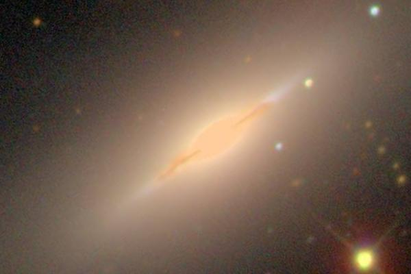

Латинское название: Draco
Принято считать, что в созвездии увековечен дракон (некоторые уверяют, что его звали Колхис или Колчис созвучно с названием страны Колхиды), охранявший золотое руно Овна. Знатоки-драконологи утверждают, что он был рожден из крови Тифона, убитого Зевсом. Его усыпила сонным зельем волшебница Медея, чтобы помочь Ясону похитить драгоценную шкуру. Возможно, Ясон убил дракона, и скорее всего, сонного.
В одиннадцатом подвиге Геракл сталкивается (и, возможно, убивает) стоглавого дракона Ладона, сторожащего яблоки Гесперид. Может быть это он?
И еще вариант: Однажды Кадм, сын Агенора и Аргиопы, находясь поблизости в поисках похищенной Зевсом сестры Европы, отправился со спутниками к источнику за очистительной водой, желая принести жертву Афине. Они совершенно не были готовы встретить такую охрану, и дракон уничтожил большинство товарищей Кадма. Изловчившись, тот раскроил чудовищу голову камнем. По совету Афины он засеял поле зубами убитого дракона, из них взошли вооруженные воины... и так далее, что уже в стороне от наших интересов (в истории аргонавтов фигурируют эти самые зубы - незасеянные остатки).
Эффектная галактика созвездия - NGC 5866, галактика Веретено, видимая ровно с ребра.
